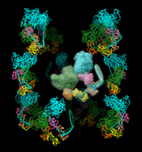

|  |
| (see Quicktime movie) |
The molecule model to copy (molmodel) is specified by model number, optionally preceded by #. This specification can be omitted from the sym command when there is only one molecule model. If sym-created copies of molmodel already exist, they will be replaced. The ~sym command without arguments closes all sym-created copies.
One application of sym is to facilitate symmetrical placement of copies of a structure (molecule model) within related volume data, usually a density map. In that case, the volume model should be specified as the reference coordinate system. After the structure has been placed approximately as desired in the density, sym can be used with update true to create copies that update automatically when the original model is moved. For example, see a Quicktime movie of myosin copies moving symmetrically.
group symmetry
Several types of symmetry are available, and most types have additional sub-options or parameters; specifications are case-independent:
- biomt (default) - use BIOMT records, if any, in the PDB file of molmodel (details...)
- cyclic symmetry Cn around axis and center
- Example: C3
- dihedral symmetry Dn around axis and center
- Example: d7
- icosahedral symmetry I[,orientation] around center
where orientation can be:
- Example: i,n25
- 222 (default) - with two-fold symmetry axes along the X, Y, and Z axes
- 2n5 - with two-fold symmetry along X and 5-fold along Z
- n25 - with two-fold symmetry along Y and 5-fold along Z
- 2n3 - with two-fold symmetry along X and 3-fold along Z
- 222r - same as 222 except rotated 90° about Z
- 2n5r - same as 2n5 except rotated 180° about Y
- n25r - same as n25 except rotated 180° about X
- 2n3r - same as 2n3 except rotated 180° about Y
- helical symmetry H,repeat,rise[,angle[,n]] around axis and center
where repeat defines a number of subunits, rise is the translation along the axis per repeat subunits, angle is the rotation in degrees per repeat subunits (default 360), and n is how many copies total (including the original) the resulting segment of infinite helix should contain (default same as repeat) prior to any filtering by contact or range.
- Example: h,13,43.5
- translational symmetry T,n,distance along axis – or – T,n,x,y,z
where n is how many copies total (including the original) the result should contain prior to any filtering by contact or range. The translation can be expressed as a distance along the axis or as a vector x,y,z in the reference coordinate system.
- Example: t,3,26.7
axis axis
Specify axis of symmetry (default z), where axis can be:
- x - X-axis
- y - Y-axis
- z - Z-axis
- x,y,z (three values separated by commas only) - an arbitrary vector in the reference coordinate system
- an atom-spec of exactly two atoms (not necessarily bonded or in the same model) or one bond. A bond can only be specified by selecting it and using the word selected, sel, or picked; any atoms also selected at the time will be ignored.
center center
Specify center of symmetry (default 0,0,0), where center can be:
- x,y,z (three values separated by commas only) - an arbitrary point in the reference coordinate system
- an atom-spec of any combination of atoms and surface pieces. The center of the bounding sphere of the specified items will be used.
coordinateSystem N
Specify a reference model (default is the original molecule model, molmodel) by model number N preceded by #. The reference coordinate system is used for dynamic updating and for interpreting coordinate specifications such as of axis and center of symmetry.
update true|false
Whether to dynamically update the positions of the copies to preserve symmetry when the original model is moved relative to the reference coordinate system. If the reference model is closed, the copies will cease to update.
contact contact-dist
Only generate copies with any atom within contact-dist of the original molecule model.
range range-dist
Only generate copies with centers within range-dist of the center of the original molecule model. A model's center is defined as the center of its bounding box.
BIOMT matrices can be added to PDB files with a text editor. The image shows twelve copies of myosin arranged helically, as specified by the following twelve matrices for PDB entry 1i84 (the first is simply an identity matrix that does not specify an additional copy):
REMARK 350 BIOMOLECULE: 1 REMARK 350 APPLY THE FOLLOWING TO CHAINS: S, T, U, V, W, Z REMARK 350 BIOMT1 1 1 0 0 0 REMARK 350 BIOMT2 1 0 1 0 0 REMARK 350 BIOMT3 1 0 0 1 0 REMARK 350 BIOMT1 2 0 -1 0 0 REMARK 350 BIOMT2 2 1 0 0 0 REMARK 350 BIOMT3 2 0 0 1 0 REMARK 350 BIOMT1 3 -1 0 0 0 REMARK 350 BIOMT2 3 0 -1 0 0 REMARK 350 BIOMT3 3 0 0 1 0 REMARK 350 BIOMT1 4 0 1 0 0 REMARK 350 BIOMT2 4 -1 0 0 0 REMARK 350 BIOMT3 4 0 0 1 0 REMARK 350 BIOMT1 5 0.866025 -0.5 0 0 REMARK 350 BIOMT2 5 0.5 0.866025 0 0 REMARK 350 BIOMT3 5 0 0 1 145 REMARK 350 BIOMT1 6 -0.5 -0.866025 0 0 REMARK 350 BIOMT2 6 0.866025 -0.5 0 0 REMARK 350 BIOMT3 6 0 0 1 145 REMARK 350 BIOMT1 7 -0.866025 0.5 0 0 REMARK 350 BIOMT2 7 -0.5 -0.866025 0 0 REMARK 350 BIOMT3 7 0 0 1 145 REMARK 350 BIOMT1 8 0.5 0.866025 0 0 REMARK 350 BIOMT2 8 -0.866025 0.5 0 0 REMARK 350 BIOMT3 8 0 0 1 145 REMARK 350 BIOMT1 9 0.866025 0.5 0 0 REMARK 350 BIOMT2 9 -0.5 0.866025 0 0 REMARK 350 BIOMT3 9 0 0 1 -145 REMARK 350 BIOMT1 10 -0.5 0.866025 0 0 REMARK 350 BIOMT2 10 -0.866025 -0.5 0 0 REMARK 350 BIOMT3 10 0 0 1 -145 REMARK 350 BIOMT1 11 -0.866025 -0.5 0 0 REMARK 350 BIOMT2 11 0.5 -0.866025 0 0 REMARK 350 BIOMT3 11 0 0 1 -145 REMARK 350 BIOMT1 12 0.5 -0.866025 0 0 REMARK 350 BIOMT2 12 0.866025 0.5 0 0 REMARK 350 BIOMT3 12 0 0 1 -145